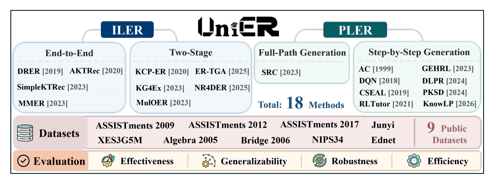

UniER
A Unified Benchmark for
Item-level and Path-level
Exercise Recommendation
UniER evaluates personalized exercise recommendation under one framework by aligning item-level recommendation and path-level learning path generation with Weighted Cognitive Gain.
Overview
UniER studies personalized exercise recommendation across two paradigms: ILER, which focuses on immediate item-level recommendation, and PLER, which constructs coherent learning paths. The benchmark addresses the lack of unified evaluation for fair cross-paradigm comparison.
Evaluation Gap
ILER and PLER have shared educational goals but historically rely on incompatible metrics, datasets, and experimental settings. This makes cross-method and cross-paradigm comparison difficult.
UniER Contribution
UniER introduces Weighted Cognitive Gain and a unified experimental setting to compare ILER and PLER methods across effectiveness, generalizability, robustness, and efficiency.

RQ1
How do ILER and PLER perform under the unified WCG metric?
RQ2
How does performance degrade under data sparsity and cold-start?
RQ3
How robust are representative models against underlying label noise?
RQ4
What is the trade-off between computational cost and pedagogical performance?
Paradigms
UniER brings two exercise recommendation paradigms into a shared output space: every evaluated method is represented as an ordered learning path under a cognitive budget of N steps.
Item-Level Exercise Recommendation
ILER recommends a Top-K set of exercises for a student's immediate cognitive needs. End-to-end methods directly map unmastered knowledge concepts to exercises, while two-stage methods separate candidate retrieval from diversified re-ranking.
Path-Level Exercise Recommendation
PLER generates an ordered exercise sequence toward pedagogical goals. Full-path methods generate the whole path at once, while step-by-step methods use sequential decisions, often with reinforcement learning.
Unified Output
To compare the paradigms fairly, UniER projects ILER outputs into sequential learning paths by sorting the recommended exercises in descending order of predicted recommendation scores. PLER outputs are already ordered paths.
Datasets
UniER evaluates nine widely recognized educational datasets spanning different domains, scales, and knowledge concept structures.
| Dataset | #Interactions | #Students | #Exercises | #KC | Description |
|---|---|---|---|---|---|
| ASSISTments2009 | 346,860 | 4,217 | 26,688 | 123 | Knowledge-tracing data from the ASSISTments online tutoring platform. |
| ASSISTments2012 | 6,123,270 | 46,674 | 179,999 | 265 | ASSISTments data from a different school year than the 2009 release. |
| ASSISTments2017 | 942,816 | 686 | 3,162 | 102 | Subset from the ASSISTments Data Mining Competition. |
| Algebra2005 | 813,661 | 575 | 1,084 | 112 | KDD Cup 2010 algebra logs with knowledge concept annotations. |
| Bridge2006 | 3,686,871 | 1,146 | 19,258 | 493 | KDD Cup 2010 bridge-to-algebra logs with long-term interaction volume. |
| NIPS34 | 1,382,727 | 4,918 | 948 | 57 | NeurIPS 2020 Education Challenge diagnostic math questions with skill labels. |
| Junyi | 25,925,992 | 247,606 | 722 | 41 | Student problem-solving logs, exercise metadata, and annotated exercise relations. |
| Ednet | 95,293,926 | 784,309 | 13,169 | 188 | Large-scale Santa AI tutoring data with diverse student activities over more than two years. |
| XES3G5M | 5,549,635 | 18,066 | 7,652 | 865 | Real-world K-12 online math learning data with auxiliary metadata and hierarchical KCs. |
Evaluation
Weighted Cognitive Gain is the primary metric in UniER. It measures expected weighted improvement in knowledge mastery before and after executing a generated learning path.
Weighted Cognitive Gain
WCG uses a task-specific target weight distribution over knowledge concepts. The normalized weight vector lets the same metric express different pedagogical goals.
Here, Hs,t is the student's interaction history, Sim(Tunified) is the simulated response sequence after executing the path, MKT(c) estimates mastery of concept c, and wc controls the task-specific importance of that concept.
Two WCG Settings
TGA evaluates targeted goal achievement by weighting a specific target concept set.
GPP evaluates global proficiency promotion by weighting all concepts the student has not yet mastered.
Additional Metrics Considered in UniER
Methods
UniER benchmarks 18 representative methods across four generation families.
End-to-end ILER
Direct recommendation from diagnosed student state or unmastered concepts.
Two-stage ILER
Candidate retrieval followed by filtering, re-ranking, or diversity optimization.
Full-path PLER
Encoder-decoder generation of the entire learning path in a single step.
Step-by-step PLER
Sequential learning path generation through dynamic decisions and feedback.
Contributors
Mentors
Graduate Students
(09/2025-)
(09/2025-)